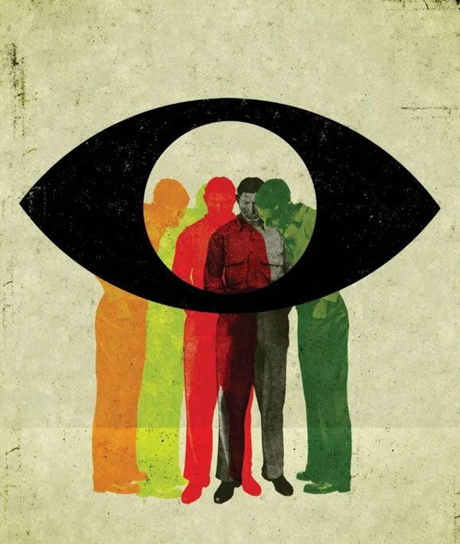
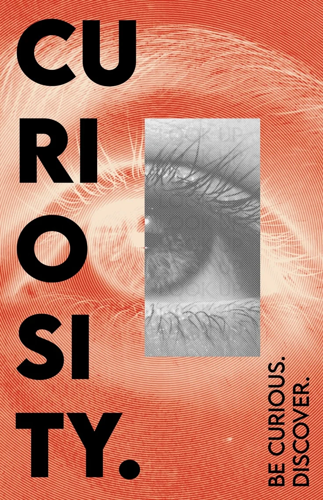

A study buddy for curious minds
Make learning feel like magic.
Meet the study buddy that makes big ideas click. Ask anything, follow the why, and find your own way through.
Ask anything
Follow the why.
Stuck on a question? Your buddy works through it with you — step by step, in words that click.
Learn together
Big questions, better together.
Small circles around one good question. Learn out loud with people who ask the same things.
Pick a rabbit hole.
Science, patterns, people. Choose one and your buddy will start the conversation.
Many minds, more possibility.
Small circles around one big question.
Could plants recognise their neighbours?Science · 18 people
Design a city that makes room for daydreamingCreative · 12 people
Explain a hard idea without its jargonStudy · 9 people

Build a mind that keeps opening.

Give an idea a little room.
Pick a lens and press Spark.
One question, new worlds.
A front-end preview of your study buddy. Real answers arrive with the full version.
Why is the sky blue?
Sunlight looks white but holds every colour. Air molecules scatter blue light the most, so the whole sky glows blue.